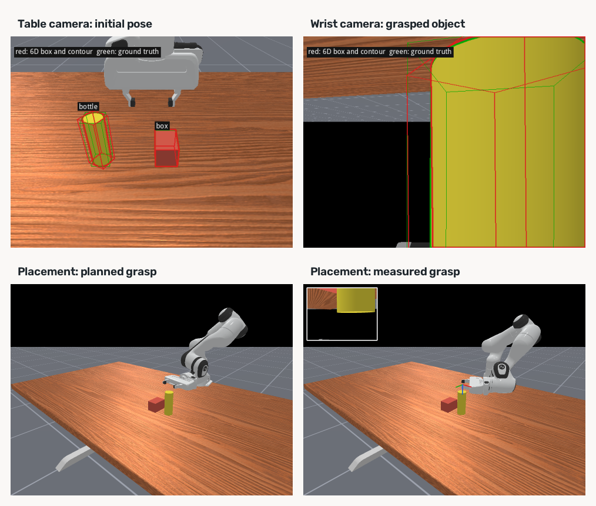

Robot simulation机器人仿真
Examples 13–17 connect known object meshes, RGB-D observations, pose estimation, and simulated manipulation in different ways. Distinguishing the perception input from the pose used for robot control is essential when reading the videos. The project page presents selected episodes.
示例 13–17 以不同方式连接已知网格、RGB-D 观测、位姿估计与仿真操作。阅读视频时，应区分感知输入与机器人控制实际使用的位姿。项目主页展示了部分回合。
Each numbered script contains its implementation. Read its if __name__ == "__main__": block for the ordered camera, estimation, coordinate conversion, motion, gripper, recording and reporting steps. Shared camera and geometry helpers are defined in the public scripts 12–13. Pose workers use the same scripts in separate processes to keep OpenGL rendering separate from the Vulkan simulator.
各编号脚本包含其实现。阅读 if __name__ == "__main__": 可按顺序查看相机采集、位姿估计、坐标转换、运动、夹爪、记录与报告。共用相机和几何函数定义在公开脚本 12–13 中；位姿子进程也使用这些脚本，将 OpenGL 渲染与 Vulkan 仿真隔离。
Study path and evidence学习路径与结果边界
The examples estimate the grasped object's pose from RGB-D and an RGB color mask, with known object geometry, camera calibration and robot kinematics. Example 13 selects poses from image observations, depth and predicted quality, without using the simulator's true object orientation or its projected center. Object truth is retained for evaluation and overlays. Examples 14–15 use a simulator-provided placement goal. These are known-goal manipulation examples, not demonstrations of visual localization of every destination.
示例从 RGB-D 和 RGB 颜色掩码估计被抓取物体的位姿，并使用已知物体几何、相机标定及机器人运动学。示例 13 依据观测图像、深度及预测质量筛选位姿，不使用仿真物体的真实朝向或真实中心投影；物体真值保留给评价与叠加显示。示例 14–15 使用仿真提供的放置目标。因此它们演示的是已知目标位置的操作，并未展示所有放置目标的视觉定位。
Begin with the generated bottle and box in example 13. Its default run performs placement; track records a separate two-camera sequence. Examples 14–15 use existing robot-task assets. Run example 16 on saved frames for tracking, then example 17 for virtual grasp views. All reported videos and distances describe individual simulation episodes.
示例 13 使用生成的瓶子与盒子，默认运行执行放置，track 另行记录双相机序列；示例 14–15 使用机器人任务自带资源。保存画面后，用示例 16 进行跟踪，示例 17 绘制虚拟抓取。本页视频和距离均来自单次仿真回合。
| Stage阶段 | Examples and input示例与输入 | What the result establishes结果说明 |
|---|---|---|
| 13 | Generated meshes; Panda table and wrist cameras生成网格；Panda 桌面与腕部相机 | Estimated world poses inform the initial side grasp and target placement.估计出的世界位姿参与初始侧面抓取与目标放置。 |
| 14–15 | Bridge[3] task assets or a ManiSkill[2] cubeBridge[3] 任务资源或 ManiSkill[2] 方块 | The displayed carrot, eggplant, and cube clips grasp from the first-frame estimate and a color mask.展示的胡萝卜、茄子和方块片段用第 0 帧位姿估计及颜色掩码抓取。 |
| 16–17 | 13 track frames and 14–15 saved frames13 track 与 14–15 保存的画面 | Temporal pose updates and a virtual grasp drawn on the estimate.逐帧位姿更新，以及在估计位姿上绘制的虚拟抓取。 |
Run and record the simulation运行与记录仿真
During manipulation, MPLib may print screw plan failed. The robot scripts then try RRT-Connect for that motion; only plan failed after both attempts is a fatal planning error. Inspect the final report and object state even when the planner returns without an exception.
操作过程中，MPLib 可能打印 screw plan failed。机器人脚本随后会对该段运动尝试 RRT-Connect；两种方法都失败后抛出的 plan failed 才是终止该回合的规划错误。即使规划器没有抛错，也应检查最终报告与物体状态。
Scripts 14–15 write website videos and posters under pages/demo/robot/; 17 writes virtual-grasp stills there. Back up the website media before running these scripts if you want to keep a copy. Run reports and frame data live under outputs/.
脚本 14–15 会写入 pages/demo/robot/ 下的网站视频与封面；17 在同一目录写入虚拟抓取图片。若需保留网页素材，请在运行这些脚本前备份。运行报告和帧数据位于 outputs/。
The first robot case has two entry points. Run the placement before the camera sequence; the latter creates outputs/sim_known_mesh_place/tracking/. It is separate from the default placement report.
首个机器人案例有两个入口。先运行放置，再运行相机序列；后者创建 outputs/sim_known_mesh_place/tracking/，与默认放置报告分开。
python examples/13_known_mesh_place.py
python examples/13_known_mesh_place.py trackExample 16 discards three complete region, refinement, scoring and raster updates for each actual batch shape before recording elapsed time. Warmup is logged separately and leaves persistent track state unchanged. The application clips below show individual episodes and their error statistics; they do not measure warmed latency of the current batched path. A clip without recorded warmup must not be used to infer steady-state speed.
示例 16 在记录耗时前，按实际批形状丢弃三次完整的目标掩码跟踪、修正、评分与光栅更新。预热单独记录，不推进持久跟踪状态。下面应用视频展示各自的单次回合与误差统计，不能用于衡量当前批量计算路径预热后的调用耗时；缺少预热记录的片段不能用于推断稳态速度。
Yellow bottle黄色瓶子
examples/13_known_mesh_place.py builds a yellow cylinder and a red box on a Panda table. Each camera makes a full pose estimate on its first frame; later frames track from that estimate. table_camera is fixed. hand_camera is mounted on panda_hand. A third camera only draws the room. It does not estimate a pose. The outline is the mesh silhouette. Red is the estimate. Green is ground truth. Cyan dashes are the pose camera's view, drawn on the third-person picture. Blue lines are the side grasp on that panel's estimated bottle, redrawn every frame. The table camera is drawn out to 0.90 m. The wrist camera is drawn out to 0.45 m.
examples/13_known_mesh_place.py 在 Panda 的桌子上放一只黄色圆柱和一个红色盒子。每台相机都在首帧完整估计位姿，后续帧在该结果基础上跟踪。table_camera 是固定的。hand_camera 装在 panda_hand 上。第三个相机只画房间，不估计位姿。轮廓是网格的剪影。红色是估计，绿色是真值。青色虚线是位姿相机的视野，画在第三人称上。蓝色实线表示侧面抓取姿态，逐帧叠加在对应相机估计出的瓶子位姿上。桌上相机画到 0.90 米。腕部相机画到 0.45 米。
Camera geometry, tracking, and placement measurements相机几何、跟踪与放置测量
Depth is the simulator camera's position buffer, in meters. The first-frame path calls estimate_many_categories_many_instances with each known mesh and its mask. Later frames use the published examples/16_follow_saved/region_tracking.py for DINOv2[1] regions and wapr/tracking.py for batched pose updates. Depth updates translation; WBPS batches independent six-hypothesis groups across all objects. The mask on the first frame is the object's color in that camera. The world pose is the camera pose times the object-to-camera pose. The wrist camera starts looking straight down at the top of the box, so the box reads as a flat card. The clip begins once that camera has tilted 30° from straight down and a side of the box is visible. Across 268 recorded frames the table camera's median center error is 1.3 mm and the axis error is 0.2°. While the fingers are closed the wrist median is 1.1 mm and 0.4°. After the retreat the wrist sees the cap, and that track stays about 100 mm off. The same frames on the table camera stay near 1.0 mm.
深度来自仿真相机的位置缓冲，单位米。首帧调用 estimate_many_categories_many_instances，输入各已知网格及其 mask。后续帧用公开的 examples/16_follow_saved/region_tracking.py 跟踪 DINOv2[1] 目标掩码，并用 wapr/tracking.py 批量更新位姿。深度更新平移；WBPS 跨全部物体批量计算，各实例保留独立的六候选组。第一帧的 mask 是这个相机里物体的颜色。世界位姿是相机位姿乘上物体到相机的位姿。腕部相机一开始正俯视盒子顶面，盒子在图像中近似为一个平面。视频从这台相机偏离正下方 30°、盒子露出侧面的那一帧开始。录下来的 268 帧里，桌上相机的中位中心误差是 1.3 mm，轴误差是 0.2°。手指合上时，腕部的中位数是 1.1 mm、0.4°。退出之后腕部看见的是瓶盖，这次跟踪停在大约 100 mm。同一批帧上的桌上相机停在 1.0 mm 附近。
The known-mesh placement experiment estimates the bottle and box centers on the table within 1.3 and 0.9 mm. Its planned placement ends 4.3 mm from the target, while the placement using the measured hand-to-object offset ends 8.8 mm away. The second measurement therefore does not improve this particular episode. The figure shows the two pose views and both final placements; these single-run distances should not be read as a control benchmark.
已知网格放置实验中，桌面上的瓶子与盒子中心估计误差分别为 1.3 和 0.9 mm。按计划抓取的放置结果距目标 4.3 mm；使用测得的手爪到物体偏移后，落点距目标 8.8 mm。因此，第二次测量在这一回合并未改善落点。下图同时展示两路位姿视图和两次放置终态；这些单次运行距离不能视作控制基准。

Bridge and xArm task objectsBridge 与 xArm 任务物体
examples/14_bridge_tasks.py runs two WidowX250S Bridge[3] tasks: carrot to plate and eggplant to sink basket. examples/15_xarm_cube.py runs xArm6 with a Robotiq gripper and a red cube on the ManiSkill[2] table. The displayed carrot, eggplant, and cube episodes use the largest connected color region as the object mask, estimate frame 0 before arm motion, and grasp from that pose. The plate, basket, and red marker remain placement targets. These color thresholds have not been checked on real camera images. examples/16_follow_saved.py makes a separate tracking pass on saved frames. The displayed clips play at 20 fps.
examples/14_bridge_tasks.py 运行两项 WidowX250S Bridge[3] 任务：胡萝卜放盘子、茄子放水槽篮子。examples/15_xarm_cube.py 则在 ManiSkill[2] 桌面上使用配备 Robotiq 夹爪的 xArm6 搬运红色方块。展示的胡萝卜、茄子和方块回合把物体颜色中最大的连通区域作为 mask，手臂动之前估计第 0 帧，再按该位姿抓取。盘子、篮子与红色标记仍是放置目标。这些颜色阈值尚未在实机图像上核对。examples/16_follow_saved.py 另行对保存的帧做跟踪。展示的视频按 20 fps 播放。
Pose measurements and placement outcomes位姿测量与放置结果
The carrot episode has 66 frames. Its frame-0 estimated center is 3.6 mm from the simulated center and the final horizontal placement is 3.5 mm from the plate target. In 43 frames after the gripper occludes the carrot, the estimate jumps far away; the 2707 mm center-error median over the whole clip reflects that later loss of tracking, not grasp initialization. The eggplant frame-0 estimate has a 0.91 mm center error and a 6.6° mesh Z-axis error. It provides the actual grasp pose. In 30 of 66 frames, the color mask is below the 150-pixel input threshold, so no pose estimate is requested. The remaining 36 frames have a 0.94 mm median center error and a 13° median mesh Z-axis error. The final placement error is 4.0 mm. The cube has 217 frames, a 1.2 mm median center error, and a 1.6 mm placement error. Its mesh Z-axis differs by roughly 90° under a visually ambiguous cube rotation; the gripper closes along world +Y. These are single episodes, not aggregate benchmark results.
胡萝卜回合共 66 帧。第 0 帧估计中心距仿真中心 3.6 mm，最终水平落点距盘子目标 3.5 mm。夹爪遮挡胡萝卜后，有 43 帧估计大幅跳离物体；全片 2707 mm 的中心误差中位数反映后期跟踪丢失，不能作为抓取初始化误差。茄子第 0 帧估计的中心误差为 0.91 mm，网格 Z 轴误差为 6.6°，实际抓取使用该估计位姿。66 帧中有 30 帧的颜色掩码小于 150 像素的输入门槛，未请求位姿估计；其余 36 帧的中心误差中位数为 0.94 mm，网格 Z 轴误差中位数为 13°。最终落点误差为 4.0 mm。方块 217 帧的中心误差中位数为 1.2 mm，落点误差 1.6 mm。方块在近对称外观下的网格 Z 轴约相差 90°；夹爪沿世界 +Y 合拢。这些都是单次回合，并非汇总基准。
The overview camera provides both the third-person view and the perception RGB-D. Color masks supply the pose region; simulator segmentation is not the estimator's mask. The actual top grasp is planned from the first-frame estimate. WidowX closes along that pose's thin axis; the cube closes along world +Y. examples/17_virtual_grasp.py draws the same grasp on the estimate. Red contours and cyan marks update on later frames for inspection but do not revise the already planned grasp. Green ground-truth contours and final errors are post-run comparisons.
总览相机同时提供第三人称画面和感知 RGB-D。位姿估计区域来自颜色 mask，而不是仿真分割。实际从上方抓取使用第 0 帧位姿估计规划。WidowX 沿该位姿较薄的轴合拢；方块沿世界 +Y 合拢。examples/17_virtual_grasp.py 将相同抓取画在估计位姿上。后续帧的红色轮廓和青色标记供检查估计变化，不会修改已规划的抓取。绿色真值轮廓与最终误差只用于事后对照。
python examples/14_bridge_tasks.py
python examples/15_xarm_cube.py
python examples/16_follow_saved.py
python examples/17_virtual_grasp.pyExample 16 updates saved pose files; it does not generate the website videos by itself. To display its tracked poses, compose the bottle video in outputs/, then redraw the Bridge and xArm website clips. Run 17 afterward to update the stills. The last three commands replace existing website media.
示例 16 更新保存的位姿文件，但不会自动生成网页视频。要展示跟踪位姿，先在 outputs/ 中重新合成瓶子视频，再重绘 Bridge 与 xArm 的网页片段，最后用 17 更新静帧。后三条命令会替换现有网页素材。
python examples/13_known_mesh_place.py compose
python examples/14_bridge_tasks.py redraw
python examples/15_xarm_cube.py redraw
python examples/17_virtual_grasp.py


References and licenses参考文献与许可
- DINOv2 — Apache-2.0. Code and official DINOv2 weights; retain copyright and license.源码与官方 DINOv2 权重；保留版权和许可。 · GitHubGitHub · License/notice 1许可/声明 1
- mani-skill — Apache-2.0. Runtime dependency; source license verified against the preserved LICENSE, with upstream copyright and third-party notices retained. Model/data assets keep separate terms.运行依赖；源码许可按已保留的 LICENSE 原文核实；保留上游版权及第三方声明，模型与数据资源另有条款。 · GitHubGitHub · License/notice 1许可/声明 1 · License/notice 2许可/声明 2
- BridgeData V2 · Original source原始来源 · GitHubGitHub
Model weights and dataset/task assets may have separate terms. WAPR's source license does not replace them.模型权重、数据集与任务资源可能有独立条款；WAPR 源码许可不替代这些许可。